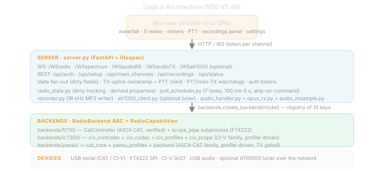
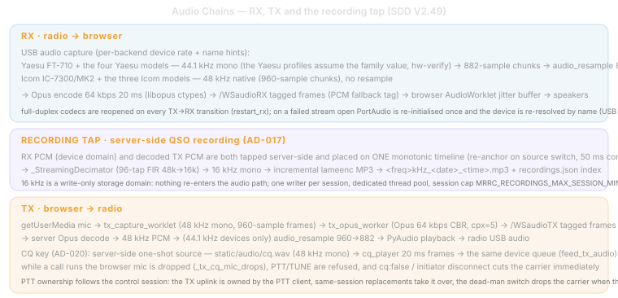
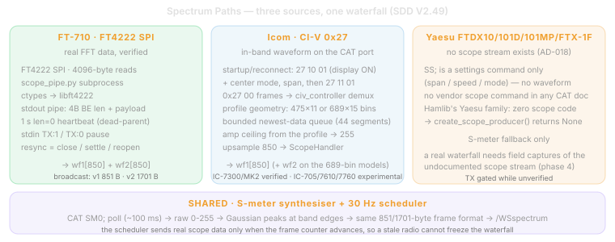
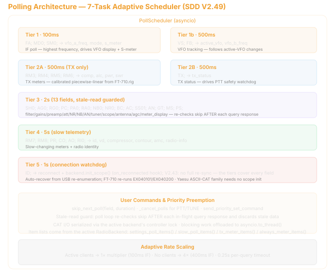
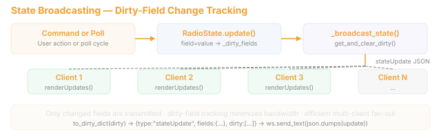
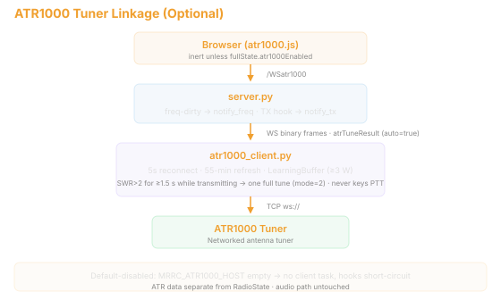

9. Architecture Overview (ART 0512)
9.1 Logical Architecture

9.2 WebSocket Endpoints
9.2.1 /WSradio (JSON text)
Control channel. Carries all radio commands, state updates, and memory management.
Server → Client:
{"type":"fullState","data":{...},"radioModel":"...","radioDisplayName":"...","capabilities":{...},"bands":[...],"modes":[...]}— initial sync on connect;capabilitiesis backend-specific (bands, modes, filters, ATT/PRE steps, meter visibility, scope banner, etc.){"type":"stateUpdate","fields":{...},"dirty":[...]}— partial changed-field update{"type":"value","field":"...","value":...}— single-value query response{"type":"memChannels","channels":[...]}— memory channel broadcast{"type":"pong"}— keepalive response
Client → Server:
{"type":"set","field":"...","value":...}— command (40+ supported fields){"type":"get","field":"..."}— query current value{"type":"memSave","channels":[...]}— save memory channels{"type":"memDelete","index":N}— delete memory slot{"type":"ping"}— keepalive
9.2.2 /WSaudioRX (binary)
Format: 1-byte codec tag (0x00=PCM, 0x01=Opus) + payload.
Server captures Int16 mono from the selected radio’s USB audio (44.1kHz for FT-710, 48kHz for IC-7300/MK2) → resamples to 48kHz if needed → Opus encodes (64kbps default) → broadcasts to all audio_rx_clients at 20ms intervals. Browser decodes via WASM OpusDecoder (or Int16→Float32 for PCM) → AudioWorklet playback with jitter buffer.
9.2.3 /WSaudioTX (binary + text)
Binary: 1-byte codec tag + encoded mic audio. Server decodes (Opus→PCM or pass-through PCM) → queues to PyAudio output stream → played to the selected radio’s USB audio input (44.1kHz for FT-710 with resample, 48kHz native for IC-7300/MK2).
Text: "s:" = stop TX; "m:rate,encode,..." = settings.
9.2.4 /WSspectrum (binary)
v1 format: 1-byte version (0x01) + 850 bytes wf1 = 851 bytes. v2 format: 1-byte version (0x02) + 850 bytes wf1 + 850 bytes wf2 = 1701 bytes.
Broadcast at ~30 fps from real scope data (FT4222 SPI for FT-710, CI-V 0x27 for IC-7300/MK2) or S-meter fallback.
9.3 RX Audio Signal Chain

See upper half of diagram.
9.4 TX Audio Signal Chain
See lower half of diagram.
TX runs at 48 kHz throughout the codec domain — browser capture and Opus encode/decode. The server bridges to the radio’s native USB audio rate: the FT-710 uses 44.1 kHz with frame-aligned resampling (960↔︎882 = exactly 20 ms, ratio 160:147); the IC-7300/MK2 uses 48 kHz native with no resample. This eliminates the v1.0 sample-rate mismatch (16 kHz mic → 48 kHz playback) and prevents a Windows shared-mode mix rate from bypassing the device-domain bridge.
The playback queue pre-buffers 60 ms and caps latency at 400 ms. Oldest-frame drops at that cap are counted as queue_drops in the per-PTT session log alongside received, decoded, written, write-error, peak, and non-owner counters. A healthy RF acceptance run therefore requires decode_fail=0, write_err=0, queue_drops=0, and non_owner_drops=0; sustained queue drops identify a host-output pacing problem even when Opus decoding succeeds.
9.5 Spectrum Signal Chain
9.5.1 Real Scope Path (FT4222 SPI for FT-710, CI-V 0x27 for IC-7300/MK2)
FT-710: FT4222 SPI → scope_pipe.py subprocess → 850-point wf1/wf2 → ScopeHandler.
IC-7300/MK2: CI-V 0x27 frames → civ_controller.py demux → 475-bin scale/upsample to 850 → ScopeHandler.

9.5.2 S-Meter Fallback (Synthetic Spectrum)
See lower half of spectrum diagram.
9.6 Backend Polling Architecture

9.7 State Broadcasting

9.8 ATR1000 Tuner Linkage (optional)

Three linkage behaviors:
- Freq change → relay apply —
_broadcast_stateon vfo_a_freq/vfo_b_freq/active_vfo dirty callsnotify_freq; learned LC values fromatr1000_tuner.json(TunerStorage: learn gate SWR 1.0–1.8, 1kHz keys ±5kHz nearest, atomic writes) are pushed to the tuner (5s write throttle). - TX on/off →
notify_tx— switches the tuner to device push mode and opens the learning window (LearningBuffer, 4-sample stability). - Tune assist — client
{"type":"atrTune"}runs_atr_tune_assist()server-side: TX2 carrier → skip if SWR≤1.6 → snapshot relays → full tune (mode=2) → keep+learn if SWR improved ≥0.02 else rollback → carrier always dropped infinally(ATR_TUNE_* constants: 0.3s settle, 5s min, 45s deadline, 0.8s compare settle, 2.5s meter wait).
Default-disabled isolation: MRRC_ATR1000_HOST empty (default) means no client task, no network traffic, linkage hooks short-circuit, /WSatr1000 closes with code 4000, and the frontend module is never initialized. ATR data is deliberately kept out of RadioState (separate channel, same precedent as spectrum); the audio path is untouched.